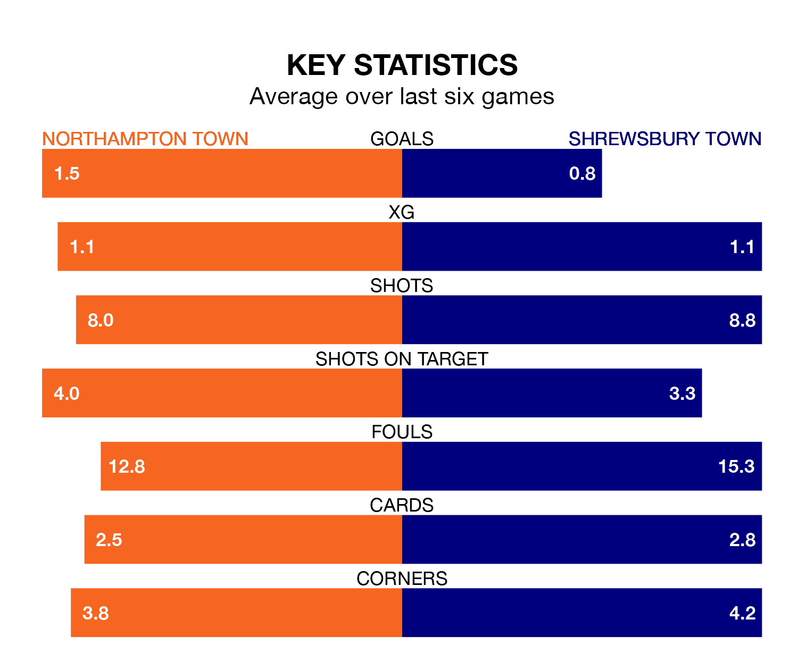

Northampton Town are heavy favourites to keep all three points at home in Saturday's kick-off against Shrewsbury Town.
The Cobblers, who sit 10th in EFL League One with 27 games played, are priced at 1.6 to seal victory at the Sixfields Stadium.
Sitting 11 places and 10 points behind them in the table, Shrewsbury are 4.4 to win with *Betting Company*, while the draw is at 3.2.
Northampton are in good form in EFL League One, with four wins and a draw from their last six games.
With a win and five losses over that period, Shrewsbury's form is much worse – they have taken three points from 18, compared to Northampton Town's 13.
In the last 10 years, Northampton and Shrewsbury have played each other on seven occasions. Northampton won three of them, Shrewsbury two, and they drew twice.
On average, the Cobblers scored 1.3 goals and the Shrews 1.0 in those matches.
Their last meeting was on October 7, when Shrewsbury won 1-0 at home.
With 18 goals in 28 games so far this season, Shrewsbury Town are the league's lowest scorers with 0.6 goals per game. And they are conceding more than average, letting in 39 goals at a rate of 1.4 per game.
The Cobblers, meanwhile, are average scorers, with 1.3 goals per game. They have also conceded 1.3 goals per game.
In Sam Hoskins, the hosts have one of the league's sharpest shooters so far this season. He has notched 14 goals in 25 appearances, to sit fifth in the scoring charts.
The Shrews' top scorers, with three goals each, are Jordan Shipley, Daniel Udoh and Cheyenne Dunkley.
Northampton's last match was on Tuesday, a 3-2 win against Charlton Athletic, with Hoskins, Louis Appere and Tyreece Simpson getting the goals for the Cobblers.
Shrewsbury lost 2-1 against Peterborough United last time out, on January 20, with Shipley on the scoresheet.
Saturday's match will be refereed by Seb Stockbridge, who has taken charge of six EFL League One games so far this season, issuing one red card and booking 33 players. He has awarded five penalties.
He is yet to oversee a match featuring either Northampton or Shrewsbury this season.
Updated: 09:07 (UTC), 24/01/24